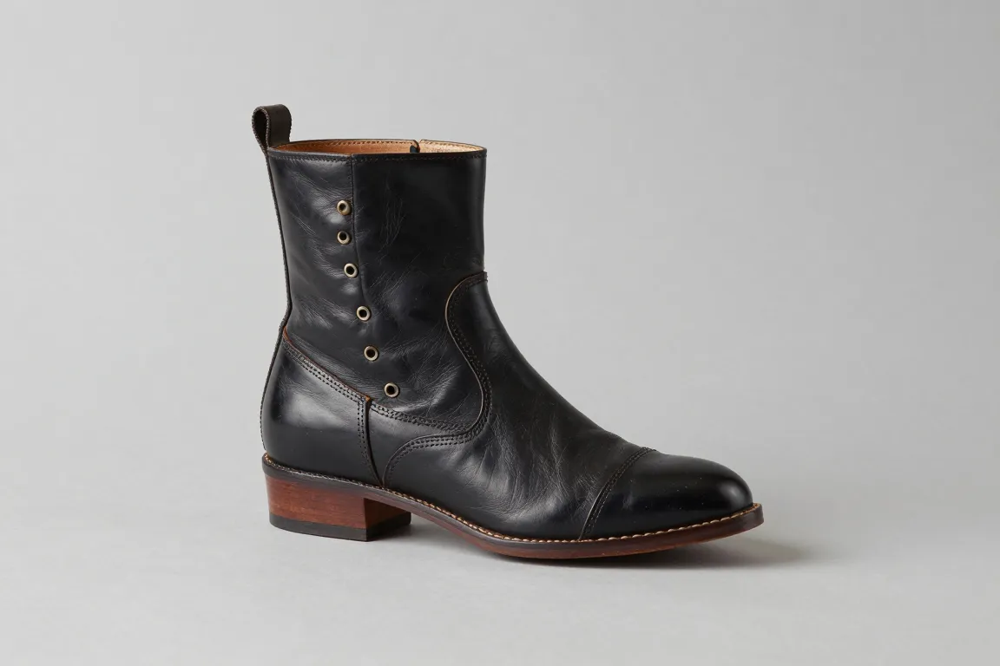

мода · 1851–1914 · также: Ботинок на пуговицах, Ботинок с эластичной вставкой, Ботинок бальморал
Ботинок до щиколотки викторианской одежды. Верх из лайки или ткани, ряд пуговиц или шнуровка спереди, эластичная боковая вставка и небольшой наборный каблук.

Главная идея
Викторианская женщина закрывает щиколотку, поэтому ботинок — обувь на каждый день, а тканевый верх показывает крой колодки.
Принципы дизайна
Закрывайте щиколотку: поднимайте голенище на 12–20 см над пяткой.
Закрывайте голенище 8–14 маленькими пуговицами или шнуровкой спереди на 8–10 люверсов.
Ставьте наборный каблук 2–4 см под геленок подошвы.
Кройте узкий слегка заострённый носок на колодке для левой и правой ноги.
Добавляйте на день накладной носок из лаковой кожи или лайки второго цвета.
Вставляйте по бокам эластичную вставку из вулканизированной резиновой ленты для ботинка без застёжки.
Пришивайте подошву к верху рантом или деревянными шпильками; не клейте.
Антипаттерны
Открытая щиколотка в городской одежде
Плоская туфля с круглым носком и одним ремешком
Каблук выше 5 см на дневном ботинке
Резиновая и вспененная подошва на классическом ботинке